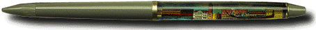

|
|
Title: "Venezia"

Donated By: Robert Keddy (Toronto, CANADA)
Travel Tip: If you go to Venice in the Winter...TAKE A WARM JACKET!!
Title: "Firenze"
Actually, the "David" is no longer in the Piazza, it was moved to the Galleria Academia in
the 1800s to preserve it. (Thanks to Meghan Hallett for the historical reference).
|
Site © 2000 Luis V. Aguila |